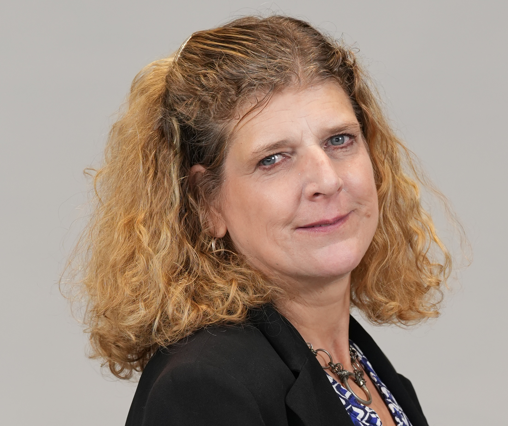

Senior education leader. Teaching and learning, student services, inclusion, and the honest work of getting a school ready for what comes next.
I build the systems that catch the students a school would otherwise lose — and the curriculum that makes them want to stay.

I have spent three decades moving between the two ends of education that rarely talk to each other: the pastoral machinery that keeps a struggling student in the building, and the curriculum design that makes the building worth walking into.
At Dulwich College Beijing I ran professional development and English as an Additional Language across a school that was winning national awards, managed a team of eighteen (14 staff, 4 teaching assistants), lifted senior school attainment twelve percent in a year, and interviewed three hundred applicants annually.
At Harrow Shanghai I built a whole-school student services department from inception, nursery through Year 13, in under a year. At NYU Shanghai I was awarded a competitive Experiential Learning Curriculum Design Fellowship, chair faculty DEI work, facilitate for the Center for Student Belonging, co-facilitate LEAD mentorship for first-generation and underrepresented students (8 mentees), advise the Collective Voice Debate Team, serve as Campus Point of Contact for the UN Millennium Fellowship, and have sustained a decade-long partnership with Stepping Stones Shanghai embedding community service into curriculum.
I am completing the National Professional Qualification for Headship at UCL Institute of Education. My implementation project, AI and Academic Integrity, examines how school leaders can guide their communities through the challenges of generative AI. I am looking for a senior academic or student services post from July 2027.
“A highly interactive, student-centered lesson. One of the stand-out elements was the positive atmosphere in which it took place. Students clearly felt supported and included. Respect for you as an instructor was obvious.”
Catherine Journeaux, EAP Faculty · Classroom observation, December 2024
“EAP 100 you taught last semester was one of the major triggers for me to devote myself to social work.”
Katrina Zhao, EAP 100 student · Went on to apply for the UN Millennium Fellowship
My family built our house ourselves, board by board. You measured growth by pencil marks on a doorframe. This is the same chart, drawn out longer.
Never think you know anything about the students sitting in front of you.
When I was eight, my parents put three thousand baby chicks in my bedroom for a week, under heat lamps, with the radio on to cover the noise. We built our own house and lived in it without running water or doors. I moved eight times before I finished school and arrived in every classroom halfway through the year. People decided I was stupid. An English teacher named Caroline Hopkins decided otherwise, and told me to apply to university. Everything I have built since is an argument that she was right about more children than me.
Four first-year courses at NYU Shanghai. EAP 100 builds presentation skills; EAP 101 builds seminar and research skills. Each uses a genuinely difficult question as the vehicle for academic English. All original course materials.
What will work look like, and how do I prepare for it? Automation, AI ethics, employability, and a semester-long portfolio built alongside four Career Development Center visits. View the course →
The UN Sustainable Development Goals as a working problem set. Community volunteering with Stepping Stones Shanghai and Good-hope Bakery of Special Youth. MIT En-ROADS climate simulator, student-run SDG campaigns, reflective journals, and a poster show. Informed by Compass Education Sustainability Practitioners Certification.
How to see a whole system instead of its parts. Causal loops, the Iceberg Model, and a capstone 30-minute research interview synthesized into a 15-minute video presentation.
Cultural history as a listening and argument course. Politics, economics, technology, race and ethnicity through the songs students discover. Proof that academic rigour and genuine delight are not opposites.